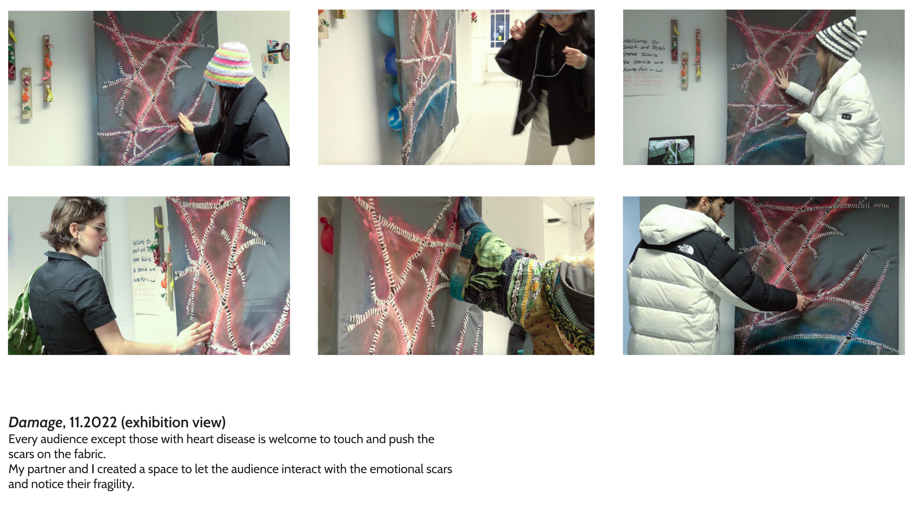
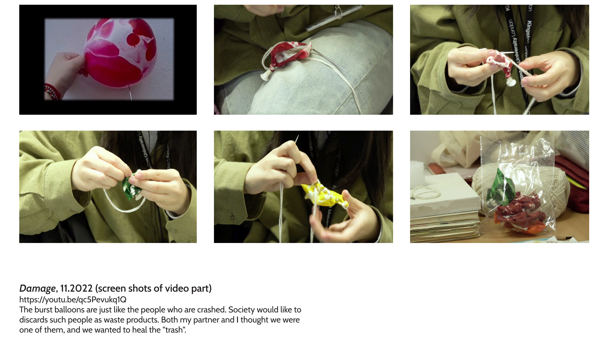

Damage
伤口需要很长时间才能愈合，护理不当可能会被感染。情感伤痕也是如此，不同之处在于情感上的伤痕更加看不见。
Wounds take a long time to heal, and the ones that are not well cared for can become infected. So do emotional scars. The difference is emotional scars are more invisible.



11.2022.
interactive installation, acrylic and wool sewing on fabric, balloons on the wall, wool sewing on exploded balloons, wood base, video playing
canvas size: 90x160 cm